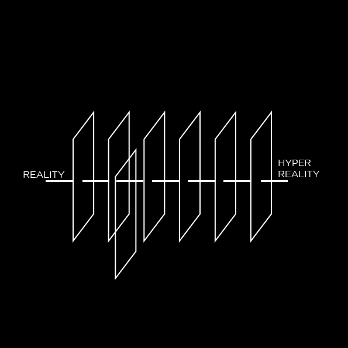
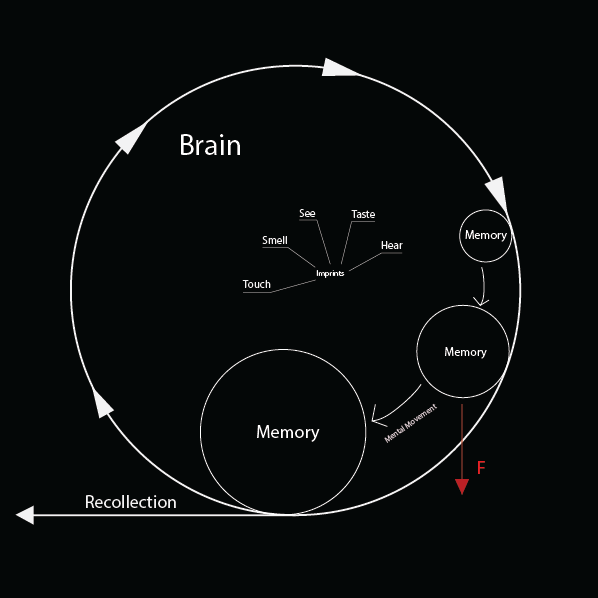
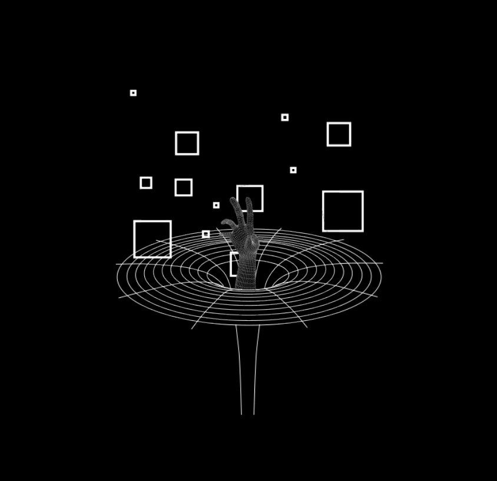
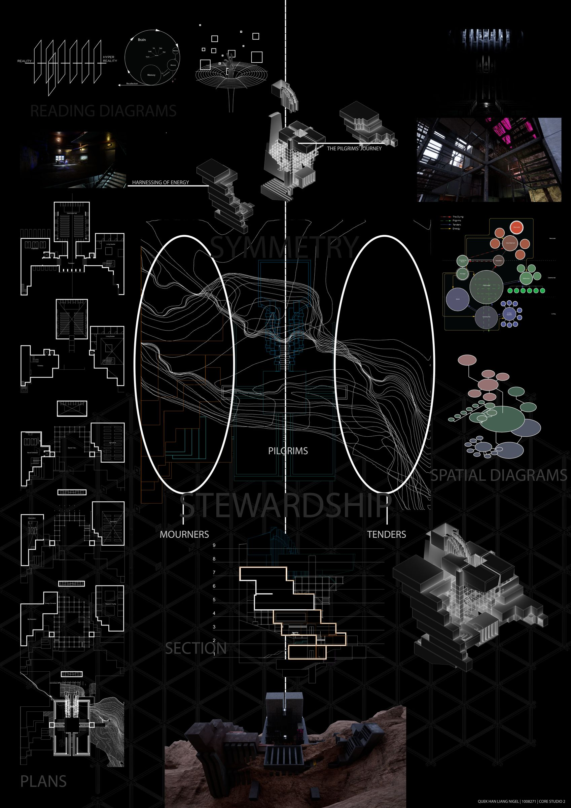

Protocemetery
Brief
In a future stripped bare by AI-driven mining, the Earth is left scarred and sterile. Amid this collapse, a new form of life emerges — not to conquer, but to tend. This project imagines a post-collapse settlement where cemeteries become sites of renewal, energy, and memory, transforming loss into sustenance and grief into growth.
Narrative
By the end of the 21st century, resource extraction had rendered vast landscapes uninhabitable. While many fled to crowded cities, a group ventured into the dead zones — becoming the "First Tenders" of the Earth. They discovered that by returning the deceased to the land, they could nourish the soil and regenerate what had been lost. Cemeteries, once solely places of mourning, became vital sites of ecological rebirth.
The settlement is organised around three journeys: the pilgrims who visit to mourn and remember, the tenders who steward the land and process the dead, and the dying who make their final passage. Energy itself has replaced money — wind, sun, water, and human effort power everything, from daily life to festivals of remembrance.


Concept collages
Site Development
The site sits at the edge of a cliff, shaded from the sun. The terrain was developed through a series of massing iterations — beginning with stacked block volumes representing the cliff's topography, then shifted and staggered to create terraces and circulation paths, before being smoothed to mimic natural erosion. The architecture is then designed within this sculpted landscape.
Design
The building is organised vertically across the cliff face, with programmatic layers moving from communal spaces at the base to memorial and columbarium spaces above. Key programmes include living quarters, workspaces, community gathering areas, ceremonial rooms, processing chambers, and private reflection spaces enhanced by XR technology. The section reveals a nine-level structure embedded into the terrain, connected by a central circulation spine.


Readings

Simulacra (Baudrillard)
In a world saturated by representations, reality itself begins to erode. Images no longer reflect the real but replace it, multiplying through stages of simulation — from faithful representation, to distortion, to the masking of absence, and finally to pure simulacra. What remains is a hyperreality where authenticity is irrelevant, and the real is no longer missing — it never existed.

On Memory and Recollection (Aristotle)
Memory is a temporal phenomenon grounded in the body and perception — the persistence of a sensory impression which the soul revisits. Recollection, in contrast, is an active search, a movement of the mind retracing associations until the original image is revived. These processes are corporeal, reliant on the condition of the body and the receptivity of the sensory faculties.

Funes the Memorious (Borges)
Perfect memory eliminates abstraction, comparison, and generalisation — all essential to human thought. Without forgetting, there can be no synthesis, no concept, no metaphor. Language collapses under the burden of specificity. To think clearly, one must forget. Meaning emerges not from total retention, but from the gaps, the blurs, and the structures imposed by the limits of memory itself.
Together, these readings ask: how do we remember meaningfully in a world where both forgetting and representation have been pushed to their limits? The Proto-Cemetery responds by anchoring memory in the body, in ritual, and in the land itself — not as data to be stored, but as an act of tending.

Summary board